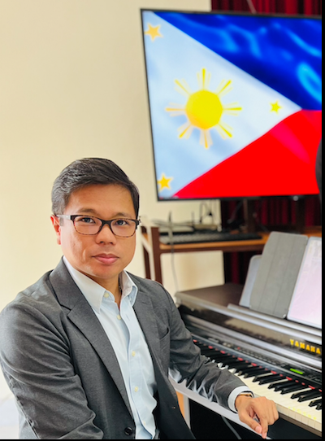
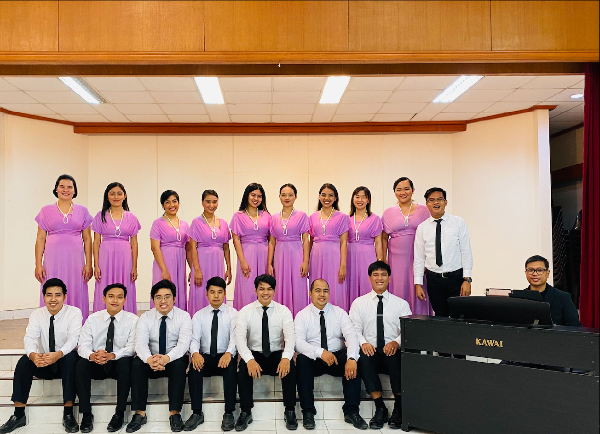
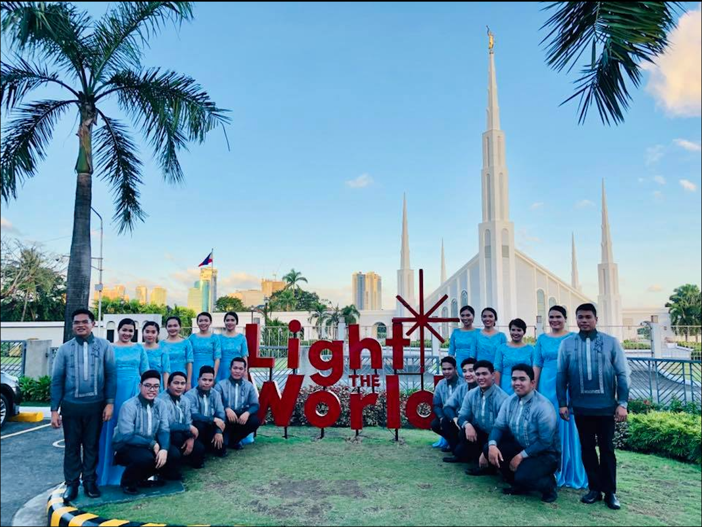

About Me
Ramon Sy
Hello everyone! My name is Ramon Sy. I live in the Cagayan de Oro City, Philippines. I am the Stake and Ward Pianist of the Church. I am an active member/pianist of VivaVocé Cagayan de Oro, a local community choir organized by members of the Church of Jesus Christ of Latter-day Saints.
I enjoy serving the Lord and sharing His truth through music. Whenever time permits, I upload videos of me playing the piano on my YouTube channel, with the intention of uplifting others, especially in these trying times. Please do check out my YouTube Channel. The link is provided at the top.
VivaVocé Cagayan de Oro aims to "Share God's Truth Through Music.".
In 8 December 2018, VivaVocé Cagayan de Oro had an opportunity to participate as one of the performers for the Annual Temple Lighting celebration: Light the World.